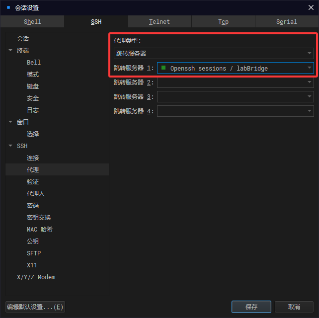

快速开始
2025-05-31
docker（推荐）
非root用户以下所有指令都应在指令前添加sudo赋权。
拉取镜像
docker pull docker.1ms.run/cnameless/blkrv运行镜像
docker run -itd -p 59066:22 -p 59067:8000 --name blkrv docker.1ms.run/cnameless/blkrv:1.0 /bin/bash此时宿主机的59066端口映射到容器的22端口，用于ssh连接，59067映射到8000端口用于访问可视化服务
安装并启动ssh服务
docker exec blkrv apt install -y openssh-server && docker exec blkrv service ssh start连接镜像
如果在windows上使用虚拟机，那么此时需要使虚拟机作为代理服务器连接docker，代理服务器配置如下：

主机ip为虚拟机地址，跳转服务器的ip为docker的ip地址。
- 虚拟机直接进入docker
docker exec -it blkrv /bin/bash- vscode
配置ssh连接配置如下：
Host j2docker HostName [docker镜像ip] User root Port [docker镜像ssh端口] ProxyJump user@[虚拟机ip]:[虚拟机ssh端口]docker镜像ip获取：
docker exec blkrv apt install -y net-tools && docker exec blkrv ifconfig
手动安装（推荐使用docker的方式，节省时间）
编译＋执行
递归克隆项目
git clone --recursive https://gitee.com/helloyutao/blkrv.git编译运行项目
cli
make带图形化界面（依赖flkt库）
make ENABLE_GPU=1需要注意该编译方式标准输入将会被重定向到图形化窗口，输入将不被命令行接收。